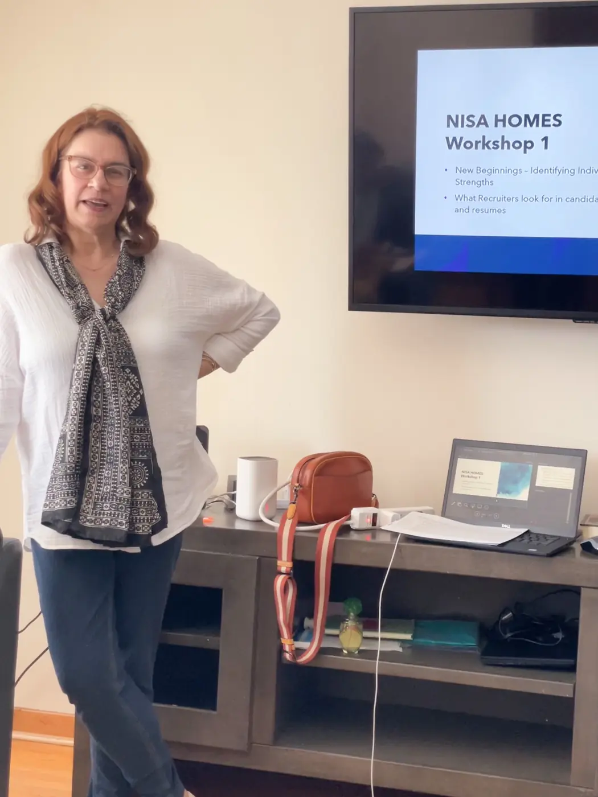
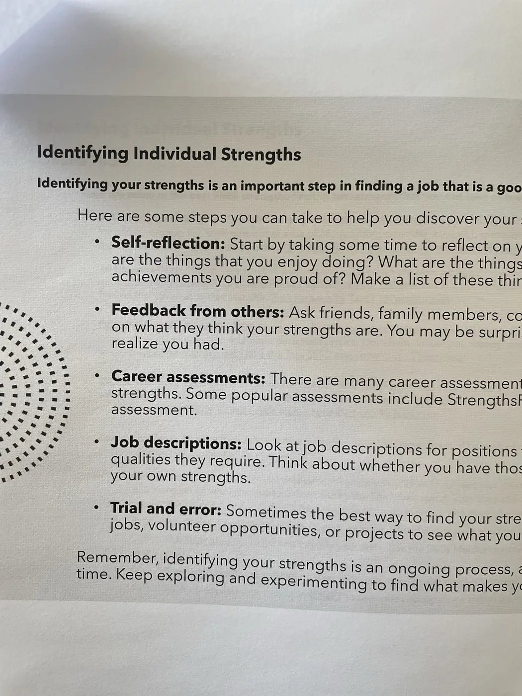

Life Skills
Our life skills workshops are designed to provide practical tools that support confidence, independence, and personal growth. These sessions may focus on everyday strategies, goal setting, wellness habits, and meaningful conversations that encourage participants as they rebuild.